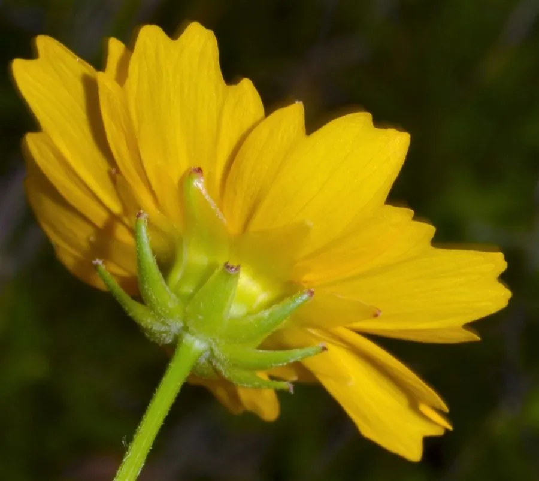

花卉与草本 · 植物界
金鸡菊 Coreopsis grandiflora

菊科金鸡菊属多年生草本，舌状花金黄、基部带橙红，花大而艳，是夏季花境和道路绿化中常见的宿根花卉。
- 分类
- 门被子植物门纲木兰纲目菊目科菊科属金鸡菊属
- 栖息环境
- 原产北美草原，栽培于花境与路旁，喜光耐旱
- 地理分布
- 原产美国南部；中国各地引种栽培
- 保护级别
- 暂无评估；栽培观赏植物，不涉及保护等级
物种志
金鸡菊为菊科金鸡菊属多年生草本，高四十至九十厘米，茎直立，分枝较多。叶片对生，羽状分裂，裂片披针形，基生叶较大。头状花序单生或数个聚生，舌状花八枚、金黄色，基部常带橙红色晕，管状花黄色，花期五至八月；瘦果扁平，具翅，果期八月至十月。
金鸡菊原产美国南部，中国各地引种栽培。它喜光、耐旱、耐寒，对土壤要求不严，在疏松排水良好的砂质土中生长最佳，忌水涝。花大色艳、花期集中，是花境、道路绿化和庭院布置的常用材料；也可作切花。栽培中花后及时修剪残花，可促进二次开花并减少自播。与同属的大花金鸡菊相比，本种舌状花基部常带橙红色晕，花形更大。
形态与习性
- 株高40–90 cm，分枝较多
- 花期5–8 月，舌状花金黄
- 果期8–10 月，瘦果具翅
- 光照喜光，全日照最佳
- 水分耐旱，忌水涝
- 土壤疏松排水良好的砂质土
- 主要用途花境、道路绿化与切花
趣味知识
- 金鸡菊的舌状花基部常有一圈橙红色晕，像金鸡羽毛上的斑纹。
- 它花后修剪残花可促发新枝，一年开两茬花。
- 金鸡菊耐旱耐寒，在北方冬季地上部分枯死，翌春仍能萌发。